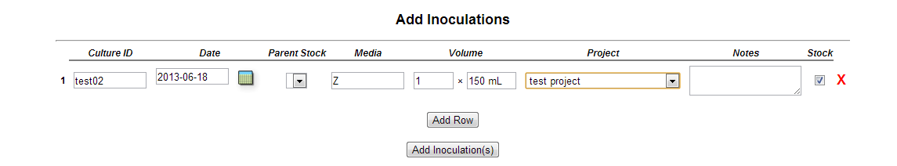
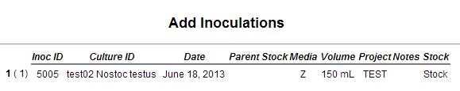
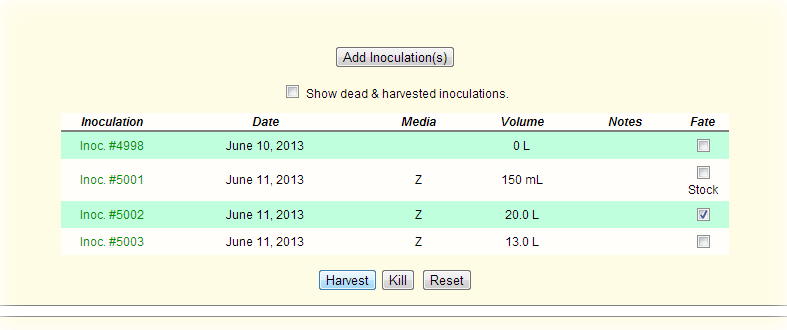
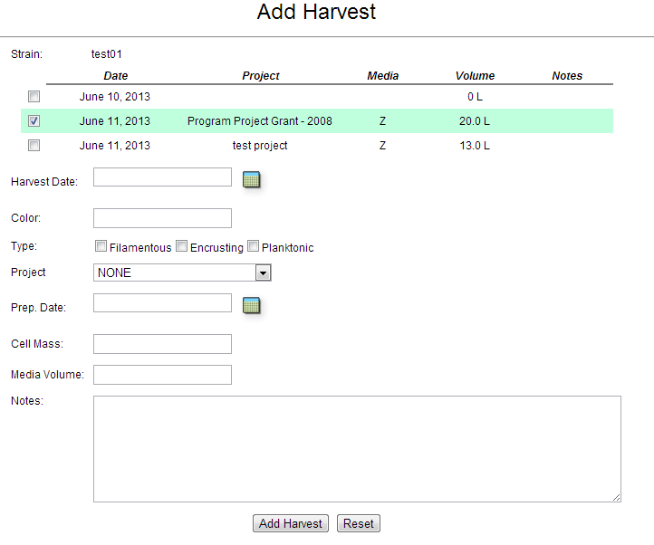
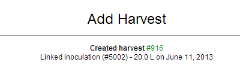

Main Table of Contents
Culture Management
Often cultured organisms are used in natural product drug discovery efforts. The CYANOS database can manage information relating to the culture conditions (inoculations), harvest information, and cryopreservation data for all strains.
Table of Contents
- Inoculations
- Adding Inoculation Data
- Harvests
- Adding Harvest Data
- Harvesting Cultured Material
- Harvesting Field Collected Material
- Updating Harvest Data
- Cryopreservation
- Adding Cryopreservation Records
- Manage Cryopreservation Collections
- Thawing Cryopreservations
- Required Roles
The inoculation records in CYANOS are used to keep track of culture conditions, which include inoculation date, volume, and media.
CYANOS can also track the parent of each inoculation as well as the fate of the culture.
The form to add inoculations can be accessed by either:
- The menu option Culture > Add Inoculation(s)
- Clicking the Add New Inoculations button in the Inoculations section of a strain's data page.
Either of these methods will open the Add Inoculations form.

This form allows one to create single or multiple inoculation records using a spreadsheet style entry form.
At the bottom of the form is the Add Row button that allows one to add additional rows to the form.
Rows can be deleted from the form by clicking the (X) at the end of the row.
Each row in the form has the following entry fields.
| Date | Inoculation date |
| Project | Project code to associate with the inoculation.
If the Inherit field is selected, the inoculation record will inhert the project code first form the parent inoculation (if designated) then the strain ID. |
| Parent Stock | Parent/source inoculation for this inoculation.
This field is generated when the strain ID for the row is changed. |
| Volume | The volume of media inoculated. The default unit is liters. Other scales, e.g. mL, can be specified in the field.
Preceeding the volume field is the quantity field which allows one to specifiy multiple instances of the same inoculation, e.g. 2 x 150 mL. |
| Media | Media of the inoculation.
If this field is empty and the strain ID is changed, the default media of the strain will be put in the field. |
| Notes | Any notes or details to include with the inoculation record |
| Stock | Select this checkbox to designate the inoculation as a stock culture. This will set the fate of the inoculation record as stock and make it unavailable for harvest. |
Once all the data is entered into the form, click the Add Inoculation(s) button to add the records to the database.

Return to table of contents
Harvest records in CYANOS are used to keep track of inoculations or field collections harvested to generate extracts.
Harvest records are added via two different forms, depending on the source of the harvested material, i.e. cultures (inoculations) or field collections.
- Access the Inoculations section of the strain's data page

- Select the desired inoculations to harvest via the checkbox at the end of the row.
- Click the Harvest button. This will open the Add New Harvest form.

- Use the form to set the characters of the harvest.
| Strain ID | Culture/Strain ID of the strain. |
| Date | Harvest date |
| Project | Project code to associate with the harvest record. |
| Color | Color of the cell material |
| Type | Type description of the cell material. |
| Cell Mass | The mass of the cell material harvested.
The default unit is grams. Other scales, e.g. mg, can be specified in the field.
NOTE: this information can be added after the harvest record is created. |
| Notes | Any notes or details to include with the harvest record |
- Click the Add Harvest button to create the harvest record.

Return to table of contents
- Access the Harvests section of the collections data page.
- Click on the Add a New Harvest link at the bottom of the harvest table to open the Add New Harvest form.
- Use the form to set the characters of the harvest.
| Strain ID | Culture/Strain ID of the strain.
NOTE: Do not leave this field blank as it is not possible to link to a strain record once the harvest record is created! |
| Date | Harvest date |
| Project | Project code to associate with the harvest record. |
| Color | Color of the cell material |
| Type | Type description of the cell material.
NOTE: this information can be updated after the harvest record is created. |
| Cell Mass | The mass of the cell material harvested. The default unit is grams. Other scales, e.g. mg, can be specified in the field. |
| Notes | Any notes or details to include with the harvest record |
- Click the Add Harvest button to create the harvest record.
Return to table of contents
Once the harvest record is created, it is possible to update certain attributes of the harvest, e.g. cell mass or notes. Harvest details can be viewed and updated from the Harvest Details page for the particular harvest. This page can be accessed via the following:
- Access the Harvests section of the strain's data page
- Click the View Harvest link for the selected harvest.
The Harvest Details page will display the attributes of the harvest record, e.g. harvest date, project code, and source material. This form will also allow one to update the following fields.
| Prep Date | Date the harvested material is ready for further action, e.g. extraction |
| Cell Mass | The mass of the cell material harvested. The default unit is grams. Other scales, e.g. mg, can be specified in the field.
NOTE: this information can be updated after the harvest record is created. |
| Media Volume | The volume of media harvested. The default unit is liters. Other scales, e.g. mL, can be specified in the field.
NOTE: this information can be updated after the harvest record is created. |
| Notes | Any notes or details to include with the harvest record |
Click the Update Harvest button to update the harvest record in the database.
Return to table of contents
The form to add cryopreservations can be accessed the menu option Culture > Add Cryopreservations(s). This action will open the Add Cryopreservations form.
Initially, this form will present a list of available dewars.
- Selected the desired dewar to view available racks in this dewar.
- Select the desired rack to view boxes in this rack.
- Finally, select the desired box to view the form to add the cryopreservation records. This form is shown below.

Use the form to set the details of the cryopreservations. The checkbox grid should be used to denote the location of the cryopreservation vials in the box.
| Strain | Strain to be preserved. |
| Inoculation | Source material for cryopreservation. Note:This field will be generated when the strain is selected |
| Preservation Date | Date of the cryopreservation |
| Notes | Any notes or details to include with the collection record |
| Duplicate Box | The box in which a duplicate set of vials will be stored. Note: the duplication feature will use the locations specified in the first box for the duplicate box. |
Click the Add Vials button to create the cryopreservation record(s) in the database.
New collections, i.e. dewars, racks, and boxes, can be added to the CYANOS database to allow efficient management of cyropreservations.
The form to add a new dewar, rack, or box can be accessed from either the Browse Cryopreservations or Add Cryopreservations forms.
Click the Add a New (Dewar/Rack/Box) link at the bottom of the table listing the current dewars/racks/boxes.
This link will open the Add Cryo Collection form to add a dewar/rack/box. The following example is the Add Cryo Collection form to add a new dewar.

Use the form to set the details of the cryo collection.
| Collection ID | A globally unique alphanumeric ID for this collection. |
| Collection Name | A descriptive name for this collection. |
| Number of Racks/Boxes or Size | Size of the collection. |
| Notes | Any notes or details to include with the collection record |
Click the Create Dewar/Rack/Box button to create the cryo collection record in the database.
Cryopresevation vials can be thawed to create a new inoculation record. To "thaw" a cryopreservation locate the record of the vial that will be thawed.
- First open the box containing the vial. This can be completed via one of the following methods:
- The menu option Culture > Browse Cryopreservation(s)
- Open the Cryopreservations section of a strain's data page.
- Select the desired vial in the layout graphic. An example is shown below. Vials are displayed as blue circles.

- Click the Thaw Vial button to open the Thaw Cryopreservation form.

- Use the form to set the details of the child culture for the cryo vial.
| Volume | The volume of media inoculated. The default unit is liters. Other scales, e.g. mL, can be specified in the field. |
| Date | Inoculation date |
| Media | Media of the inoculation. |
| Project | Project code to associate with the inoculation. |
| Stock culture | Select this checkbox to designate the inoculation as a stock culture. This will set the fate of the inoculation record as stock and make it unavailable for harvest. |
| Remove vial from box | Select this checkbox to remove the vial from the cryopreservation box. |
- Click the Thaw Vial button to update the changes in the database.
Return to table of contents
Required permissions listed in this table denote the role and permission bit, in parenthesis. Actions in
italics utilize global level permissions only.
| Action | Required Permission |
| Add a new inoculation | culture(Create) |
| Add a new harvest | culture(Create) |
| Modify a harvest record | culture(Write) |
| Add a new cryopreservations | cryo(Create) |
| Add a new cryo collection | cryo(Create) |
| Thaw a cryopreservation | cryo(Write), culture(Write) |
Return to table of contents
Main Table of Contents